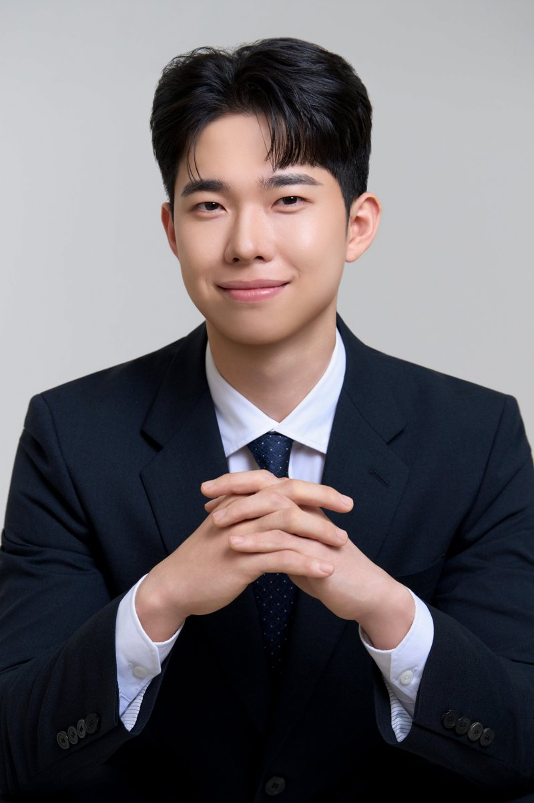

세금이 정해지기 전에는 설계하고, 정해진 뒤에는 다시 검토합니다.
가족법인이 맞는지 판단부터 지분 구조, 설립, 설립 후 운영과 배당·급여 설계까지 담당합니다.
자세히 보기 →양도 시기와 명의, 증여 순서, 상속 준비를 세금이 확정되기 전에 설계합니다.
자세히 보기 →이미 낸 세금을 다시 검토해 돌려받고, 부당한 과세는 이의신청·심판청구로 다툽니다. 이전에 신고한 건도 다시 검토합니다.
자세히 보기 →세무서 안내문과 소명 요구에 대응하고 조사에 입회합니다.
자세히 보기 →결산부터 세무조정, 법인세 신고까지 법인 운영에 필요한 세무 업무를 수행합니다.
장부 작성과 증빙 관리, 부가가치세·종합소득세·원천세 신고까지 기본을 관리합니다.
자세히 보기 →
안녕하세요, 세무회계 해성 대표세무사 성기훈입니다.
세금은 신고서를 쓸 때가 아니라 거래를 결정할 때 정해집니다. 그래서 신고보다 설계를 먼저 봅니다. 가족법인을 만들지 말지, 언제 양도하고 누구에게 증여할지를 세금이 확정되기 전에 함께 정합니다.
이미 낸 세금도 다시 봅니다. 법령과 판례를 대조해 더 낸 세금은 경정청구로 돌려받고, 부당한 과세는 불복으로 다툽니다.
전화(010-5012-8885), 카카오톡 채널, 이메일(khseong@taxhaeseong.com)로 신청하실 수 있습니다. 방문 상담은 예약제로 운영합니다. 가족법인·양도·증여·상속 설계와 경정청구는 자료 검토 후 유료 상담으로 진행하며, 수임으로 이어지면 상담료는 받지 않습니다.
법정신고기한까지 신고한 세금은 법정신고기한이 지난 후 5년 이내에 경정청구를 할 수 있습니다(국세기본법 제45조의2). 공제·감면을 빠뜨렸거나 세금을 더 많이 계산해 신고한 경우가 대상입니다. 돌려받을 수 있는지는 신고서와 증빙을 법령·판례와 대조해 판단하며, 결과는 세무서의 결정에 따릅니다.
부동산 임대처럼 계속 수익이 나는 자산을 가족 단위로 운영하거나, 자녀에게 자산을 단계적으로 넘기려는 경우에 검토합니다. 다만 법인을 만들면 설립·유지 비용과 장부·신고 의무가 생기고, 지분 구조에 따라 주주에게 증여세 문제가 생길 수 있어 개인으로 유지할 때와 비교한 뒤 결정합니다.
매매계약 전이 좋습니다. 양도소득세는 보유 주택 수, 보유·거주 기간, 명의, 양도 시기에 따라 달라지는데, 계약 후에는 바꿀 수 있는 것이 적습니다. 부동산을 판 뒤에는 원칙적으로 양도일이 속하는 달의 말일부터 2개월 이내에 양도소득세 예정신고를 해야 합니다(소득세법 제105조).
통지서에 적힌 조사 대상 세목, 조사 기간, 조사 사유부터 확인하고, 자료를 제출하기 전에 상담받으시는 것이 좋습니다. 세무조사는 원칙적으로 조사 시작 20일 전에 통지되며(국세기본법 제81조의7), 납세자는 세무사를 조사에 참여시킬 수 있습니다(같은 법 제81조의5).
이의신청, 심사청구, 심판청구로 다툴 수 있습니다. 처분이 있음을 안 날(통지를 받은 경우 그 받은 날)부터 90일 이내에 제기해야 하므로(국세기본법 제61조·제66조·제68조), 고지서를 받으면 바로 검토하는 것이 좋습니다.
장부 작성과 증빙 관리, 부가가치세·종합소득세·원천세 신고를 맡습니다. 법인은 결산과 세무조정, 법인세 신고까지 진행합니다. 신고 후에는 납부할 세액과 납부서를 안내합니다.
의뢰하실 수 있습니다. 자료는 이메일과 카카오톡으로 주고받고, 필요하면 방문 일정을 따로 정합니다.
전화 또는 이메일로 편하게 문의해 주세요. 방문 상담은 예약제로 운영합니다.
가족법인·양도·증여·상속 설계와 경정청구는 자료 검토 후 유료 상담으로 진행하며, 수임으로 이어지면 상담료는 받지 않습니다.